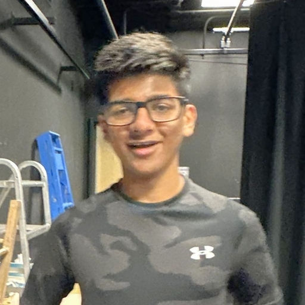

Buttons are very useful in websites when linking other pages or linking to the same page buttons are ascetically much better than links.
Using CSS we can make these buttons look and function even better.
Here's what a default button looks like
As you can see This is very boring.
First thing we can do to customize these buttons is by addidng different colors to them.
Another thing you can customize is the size of the buttons.
These buttons can also be rounded to make them look better.
Another property CSS Buttons have is that they can change how they look when you hover over them or click them.
Here's and example of hovering over buttons to change their color.
We can also add other effects like
Shadows
Disabled Buttons
Wide Buttons
Animated Buttons
Buttons on Pictures

You can even make buttons look different by clicking them like adding a pressed effect or a ripple effect. As shown Below.
The pressed effect